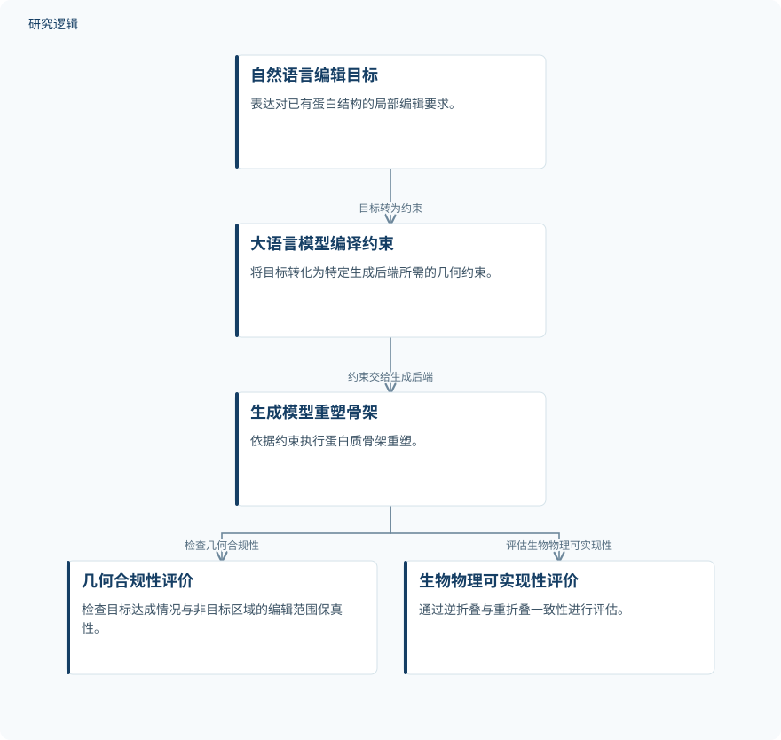

摘要解读
PROTEAN：超越从头生成的大语言模型智能体文本引导蛋白质结构编辑
PROTEAN: Beyond De Novo Generation - Can LLM Agents Perform Text-Guided Protein Structure Editing?
解读更新 2026-10-17 09:00 · 依据公开摘要整理，未核验全文细节
蛋白质工程往往不是从零生成结构，而是在已有蛋白上精准修改局部，同时保住关键功能区域和整体骨架。PROTEAN关注这一更受约束的问题：大语言模型能否把自然语言编辑目标转化为可执行、且在生物物理层面可行的结构修改？
文章目录
局部改得对，还要让其余结构保持稳定
优化亲和力、改变免疫原性或提高稳定性，是摘要列举的局部编辑需求，而非本文已经验证的应用效果。这些修改同时受到保护核心催化基序和整体骨架完整性的约束，因此不能只看目标区域是否发生了预期变化。
摘要指出，现有生成式设计流程往往需要人工指定复杂的底层参数，并跨生成后端反复采样和评价。自然语言便于表达目标，但结构生成模型不能直接理解高层指令；PROTEAN试图为这段接口及其执行结果提供标准化评测。
把语言目标编译为约束，再重塑蛋白骨架
PROTEAN包含380个子任务，覆盖六类干预。其评测流程分为两个阶段：先由大语言模型将自然语言目标转化为特定后端所需的几何约束，再由生成模型重塑蛋白质骨架。这里，大语言模型承担的是约束编译角色，而不是直接完成全部结构生成。
评价则分为两个层次：几何合规性检查目标是否达成、非目标区域是否保持在允许的修改范围内；生物物理可实现性通过逆折叠与重折叠一致性评估。这样的划分让“几何上符合要求”和“能够通过后续一致性检验”不再混为一谈。
依据摘要整理的结构编辑与分层评价示意


概括自然语言目标到骨架重塑的流程及两类评价；这是摘要整理示意，不是论文原图。
下载 SVG图示关系说明
实线表示相邻阶段的信息流，虚线表示跨阶段联系或反馈。
自然语言编辑目标 → 大语言模型编译约束：目标转为约束；大语言模型编译约束 → 生成模型重塑骨架：约束交给生成后端；生成模型重塑骨架 → 几何合规性评价：检查几何合规性；生成模型重塑骨架 → 生物物理可实现性评价：评估生物物理可实现性
约束理解较准确，瓶颈更多出现在执行之后
摘要报告了五个前沿大语言模型与三个后端的配对评测，严格端到端生物物理成功率起点仅为7.0%。这一表述不能理解为全部组合的统一成功率，也不能据此推断最高水平或平均表现。
消融研究显示，大语言模型的约束编译已经具有较高准确性，主要瓶颈是与后端相关的编辑范围外溢，以及重折叠失败。也就是说，正确翻译编辑要求并不保证最终结构成功，生成执行和后续一致性仍是关键关卡。
任务规模明确，样本与验证边界仍需查阅正文
仅凭摘要，无法判断任务涉及多少独立蛋白、样本如何选择、六类干预如何分布，也无法核对各模型与后端的具体比较结果、成功判据和不确定性。摘要未交代是否开展湿实验验证；逆折叠和重折叠一致性不能直接等同于真实功能改善。上述信息缺口不代表论文没有进行相关工作。
阅读启发：把指令正确与结构可行分开审视
阅读启发：对于关注结构生成式设计与可靠性的读者，值得继续追问的是，目标达成、非目标区域保护与生物物理一致性之间如何相互制约。进一步阅读可优先查看分层评价定义及失败案例，理解约束编译正确后为何仍会失败，而不宜把这一蛋白质基准直接当作其他工程领域有效性的证据。
以上为本站阅读启发与建议，不是论文已验证的结论。